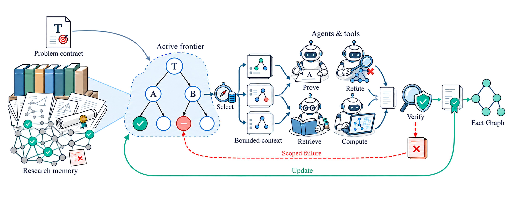
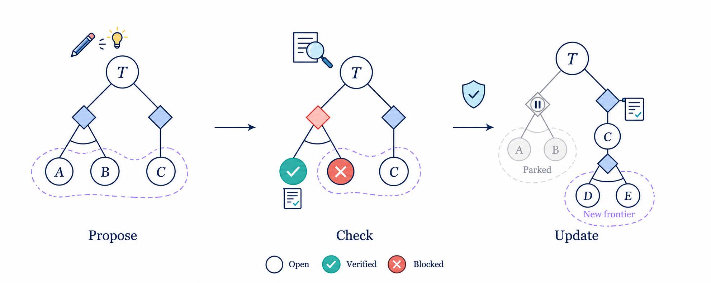
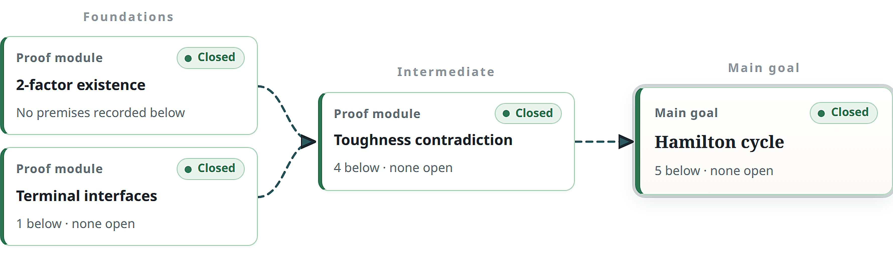
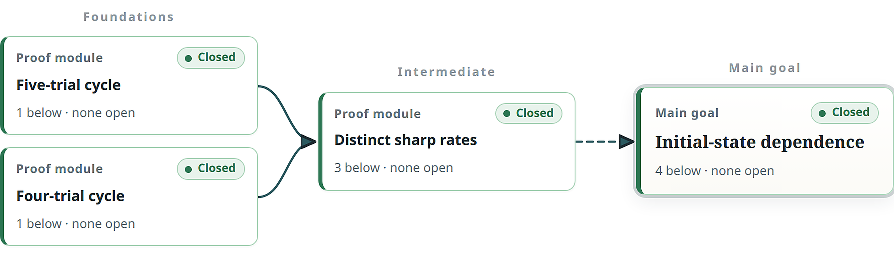

Euler integrates Lean kernel checking as an evidence level, and its three case studies come with publicly linked Lean 4 formalizations, including Mathlib's SimpleGraph.IsHamiltonian.
Abstract
Mathematical research drives scientific discovery, and recent advances in AI for mathematics have shown that language-model agents can solve challenging problems and develop substantial mathematical proofs. Yet much of today's AI-for-mathematics work centers on obtaining a final answer. This emphasis leaves the exploration behind a result difficult for researchers to understand, while long-running investigations face fragmented context and the risk of unsupported claims propagating across reasoning steps. We present Euler, a human-centered mathematical research system built around a shared, structured representation of the research process. Euler organizes mathematical statements, assumptions, proof dependencies, alternative approaches, failed attempts, and verification evidence into connected research graphs. This representation allows researchers to trace how results are developed and supplies agents with persistent, task-relevant knowledge for planning, collaboration, and verification across sessions. Researchers can also select a graph node linked to a saved team state, revisit the agents' earlier reasoning, and explore alternative directions through continued interaction. We illustrate Euler's capabilities through three mathematical research case studies and describe the implemented system and its software validation.
Problem
AI-for-mathematics systems mostly target final answers. That leaves the exploration behind a result hard to inspect. Long-running multi-agent investigations also suffer from fragmented context and from unsupported claims propagating into later reasoning.
Approach
Euler is a human-centered multi-agent research system. It keeps a shared, versioned research state: problem contracts, obligations, routes, failed attempts and evidence, stored in an append-only event store and a Fact Graph. A frontier-driven controller schedules agent actions with compiled contexts. Results enter the state only through evidence-aware reconciliation, with evidence levels ranging from LLM-checked proofs to Lean-kernel-checked proofs recorded with source hashes and permitted axioms. A browser workbench lets researchers read proofs, navigate dependency graphs and branch from saved team checkpoints.

Figure 1 : The Euler research loop. A fixed mathematical target and persistent research records determine an active frontier. Agents receive contexts for selected obligations, produce arguments or computational evidence, and return checked outcomes to the shared state. The same underlying objects are presented to the human researcher through the workbench.

Figure 2 : An illustrative AND/OR frontier. Two proposed routes compete to establish T . Evidence closes A and excludes the route requiring B ; a checked reduction of C creates obligations D and E . The active fringe moves as supported claims and route relations change.
Results
Three case studies are presented in the workbench: Nikoghosyan's Hamiltonicity conjecture, a Lewis–Overton BFGS rate conjecture and the four-connected Jankiewicz–Norin–Wise problem. Each comes with manuscripts and linked Lean developments. Software validation passed 1,352 offline tests plus the native-team and browser test suites.

Figure 8 : Selected proof modules leading to Nikoghosyan’s Hamiltonicity theorem. The overview exposes the principal prerequisite dependencies.

Figure 10 : Proof structure for the Lewis–Overton investigation. The five-trial and four-trial execution families establish distinct sharp rates, which are compared to derive initialization dependence. Each module links to its exact conditions and evidence.
Case
Documented result
Research-state focus
Nikoghosyan
Hamiltonicity for finite, 1-tough, (P4∪P1)-free simple graphs on ≥3 vertices
Prerequisite closure and exact theorem assumptions
Lewis–Overton
Two nonterminating BFGS executions with distinct sharp trial-normalized rates for 9/5<u<13/6